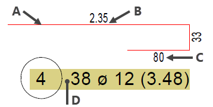
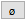

")

Voreinstellungen für die Darstellung von Auszügen und Verlegungen für Rund(Form)-stahl und Formmatten.
·Die Positionierungstext-ID-Nr. 1 kann ab ISBCAD 2024 im Dialog DefPos konfiguriert werden.
·Die Konfiguration der Unterpositionen ist ab ISBCAD 2024 in dem jeweiligen Konfigurationsdialog für Voute und Bogenstaffel zu finden.
Beispiel: Auszugstext und Auszugsform |
 |
A. Strichstärke Teillänge/Auszugsform |

Vorschlag Betonüberdeckung (cm): Dieser Wert wird im Bewehrungsprogramm automatisch vorgeschlagen. |
Voreinstellungen für die Rundstahl-Auszüge.
Textauszug (Auszugstext), Textgröße (cm) Eingabe der Textgröße. Stiftnummer Auswahl der Stiftnummer. Breitenfaktor (.5-2) Angabe des Breitenfaktors. Font Auswahl der Schriftart und -auszeichnung. Bei Windows® True Type Schriften können zusätzlich die Attribute "fett", "kursiv", "unterstrichen" und "durchgestrichen" gewählt werden. Verhältnis Textgröße/Umrandung Dieser Faktor bestimmt die Größe der Umrandung in Abhängigkeit von der Textgröße. Abstand Text/Teillänge (1/10mm) Angabe des Abstandes vom Text zur Teillänge. Teillängendarstellung Vorbiegung Einstellungen für die Darstellung von Aufbiegungen: [Formst | BiForm | ÖrtBie]. Stiftnummer Teillänge Auswahl der Stiftnummer. Strichtyp Teillängen Auswahl des Strichtyps: gestrichelt, durchgängig usw. Biegelistentext Eingabe eines einzeiligen Biegelistentexts. Geben Sie hier den Text ein, der auf der Zeichnung und in der Biegeliste angezeigt werden soll. Textgröße (cm) Angabe der Textgröße für den Biegelistentext in der Zeichnung. Stiftnummer Auswahl der Stiftnummer für den Biegelistentext. Breitenfaktor (.5-2) Angabe des Breitenfaktors. Font Auswahl der Schriftart und -auszeichnung. Bei Windows® True Type Schriften können zusätzlich die Attribute "fett", "kursiv", "unterstrichen" und "durchgestrichen" gewählt werden. Aufbiegewinkel Setzen Sie bei anzeigen einen Haken, wenn am Pfeil für die Biegerichtung der Aufbiegewinkel angeschrieben werden soll. Um die Winkelangabe zu deaktivieren, entfernen Sie den Haken. |
Voreinstellungen für Zusatzauszüge, das Aufrunden von Hakenlängen und Stahlauszugdarstellung.
Text Zusatzauszug Darstellung des Zusatzauszuges (gestrichelte Form). Stiftnummer Teillänge Zusatzauszug Auswahl der Stiftnummer für die gestrichelte Auszugsform. Textgröße (cm) Eingabe der Textgröße. Stiftnummer Auswahl der Stiftnummer für den Positionstext der Auszugsform. Breitenfaktor (.5-2) Angabe des Breitenfaktors. Font Auswahl der Schriftart und -auszeichnung. Bei Windows® True Type Schriften können zusätzlich die Attribute "fett", "kursiv", "unterstrichen" und "durchgestrichen" gewählt werden. Verhältnis Textgröße/Umrandung Dieser Faktor bestimmt die Größe der Umrandung in Abhängigkeit von der Textgröße. Hakenlänge Aufrunden der Hakenlänge für neu erstellte Auszugsformen auf halbe oder ganze Zentimeter. Beispiel:
Stahlauszug Abstand Pos.Kreis/Pos.Kreis (1/10mm) Angabe eines Abstands zwischen automatisch generierten Auszugstexten. Der Abstand gilt von Positionskreis zu Positionskreis. Dieser Abstand wird auch bei den Formmatten-Auszugstexten verwendet.
Zeichen für Bewehrungsdurchmesser Angabe eines individuellen Durchmesserzeichens.  fügt das Durchmesser-Symbol ein.Das hier angegebene Zeichen wird auch für das Durchmesserzeichen im Sonderzeichen-Dialog verwendet. Zeichen für Biegerollendurchmesser Angabe des für den Biegerollendurchmesser verwendeten Zeichens (z. B. "ds") für Formstahl und Formmatten. fügt das Durchmesser-Symbol ein. |


Voreinstellungen für die Formmatten-Auszüge.
Textauszug, Textgröße (cm) Eingabe der Textgröße. Stiftnummer Auswahl der Stiftnummer. Breitenfaktor Angabe des Breitenfaktors. Font Auswahl der Schriftart und -auszeichnung. Bei Windows® True Type Schriften können zusätzlich die Attribute "fett", "kursiv", "unterstrichen" und "durchgestrichen" gewählt werden. Verhältnis Textgröße/Umrandung Dieser Faktor bestimmt die Größe der Umrandung in Abhängigkeit von der Textgröße. Abstand Text/Teillänge (1/10mm) Angabe des Abstandes vom Text zur Teillänge. Teillängendarstellung Vorbiegung Einstellungen für die Darstellung von Aufbiegungen: [Formma | BiForm | ÖrtBie]. Stiftnummer Teillänge Auswahl der Stiftnummer. Strichtyp Teillängen Auswahl des Strichtyps: gestrichelt, durchgängig usw. Biegelistentext Eingabe des Biegelistentexts für die Anzeige in der Zeichnung und Biegeliste. Textgröße (cm) Angabe der Textgröße für den Biegelistentext in der Zeichnung. Stiftnummer Auswahl der Stiftnummer für den Biegelistentext. Breitenfaktor (.5-2) Angabe des Breitenfaktors. Font Auswahl der Schriftart und -auszeichnung. Bei Windows® True Type Schriften können zusätzlich die Attribute "fett", "kursiv", "unterstrichen" und "durchgestrichen" gewählt werden. Aufbiegewinkel Setzen Sie bei anzeigen einen Haken, wenn am Pfeil für die Biegerichtung der Aufbiegewinkel angeschrieben werden soll. Um die Winkelangabe zu deaktivieren, entfernen Sie den Haken. |
Darstellung des Zusatzauszuges (gestrichelte Form).
Text Zusatzauszug Darstellung des Zusatzauszuges (gestrichelte Form). Stiftnummer Teillänge Zusatzauszug Auswahl der Stiftnummer für die gestrichelte Auszugsform. Textgröße (cm) Eingabe der Textgröße. Stiftnummer Auswahl der Stiftnummer. Breitenfaktor Angabe des Breitenfaktors. Font Auswahl der Schriftart und -auszeichnung. Bei Windows® True Type Schriften können zusätzlich die Attribute "fett", "kursiv", "unterstrichen" und "durchgestrichen" gewählt werden. Verhältnis Textgröße/Umrandung Dieser Faktor bestimmt die Größe der Umrandung in Abhängigkeit von der Textgröße. |
Voreinstellungen für die Darstellung der Formstahlverlegungen.
|
Voreinstellungen für die Darstellung der Formmattenverlegungen.
|
Zugehörige Referenz: